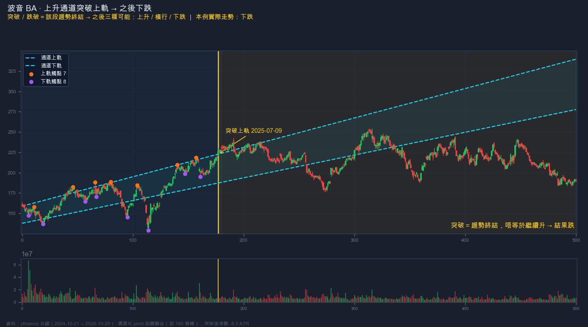
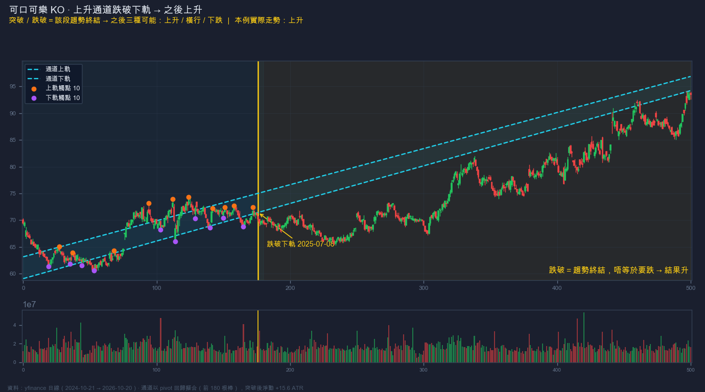
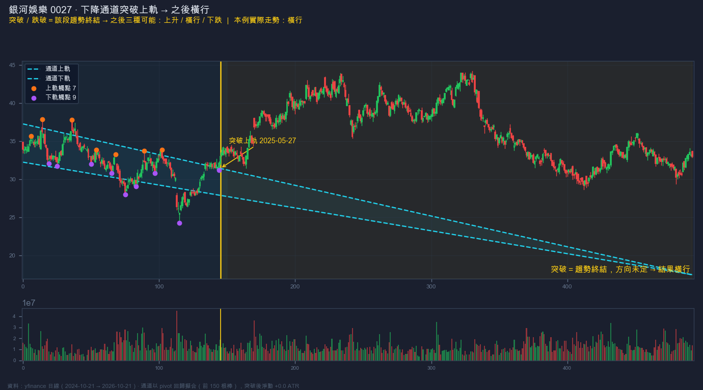

01
上升通道
高點越抬越高（Higher High）+ 低點越抬越高（Higher Low），兩條向上平行嘅軌道。
上升通道代表「有序嘅上升趨勢」。
✓ 斜率向上、兩軌平行、價格在內來回
Parallel Channel · 平行通道
平行通道係「一段有序趨勢」嘅容器。價格突破上軌或跌破下軌，即係離開咗原本嘅秩序 — 原本嗰段趨勢結束。但結束唔等於反轉，之後可以上升、橫行、下跌三種走法， 所以突破方向只係「問題的開始」，唔係答案。
平行通道 = 兩個或以上嘅高點 + 兩個或以上嘅低點，各自連成一條直線，而兩條線互相平行。 價格大部分時間在兩線之間來回，形成一個有節奏嘅上升 / 下降 / 橫行結構。
高點越抬越高（Higher High）+ 低點越抬越高（Higher Low），兩條向上平行嘅軌道。
上升通道代表「有序嘅上升趨勢」。
高點越降越低（Lower High）+ 低點越降越低（Lower Low），兩條向下平行嘅軌道。
下降通道代表「有序嘅下跌趨勢」。
高點在同一水平、低點在同一水平，斜率接近 0。
本質係「無方向嘅區間」，向上突破 = 區間結束，向下突破一樣係結束。
通道最易犯嘅錯係「事後畫到靚」。所以要用固定規則：擺動點（pivot）→ 回歸擬合 → 檢查平行與包覆， 掃描器同人手畫線都用同一套標準。
每條軌最少要有 2 個觸點，3 個以上更可靠；觸點越多、越平均分佈，通道越有效。
上下軌斜率要接近一致；斜率差距太大就係「擴散三角形」或「楔形」，唔係平行通道。價格亦要大部分時間在通道內。
跨幾年嘅通道要用 log scale 畫，否則價格翻倍／腰斬會令斜率失真；日線級別（3–12 個月）用 linear 即可。
通道係「趨勢嘅容器」。價格持續離開容器，代表原本維持秩序嘅買／賣盤已經失衡 — 呢一段趨勢正式完結。呢個判斷同「方向」無關：向上突破係終結，向下跌破一樣係終結。
原本「沿軌道來回」嘅節奏消失：回調唔再在下軌止住、推進唔再在上軌受阻。波幅、斜率、時間週期都會變。
上升通道跌破，唔等於一定跌；向上突破，唔等於一定繼續升。通道終結只講「舊秩序結束」，新方向要重新確認。
第一根穿軌嘅燭，經常係假突破（throw-over）。未經回測確認之前，通道邊界嘅「突破」優先當成風險事件，唔係入場信號。
📌 一句記住：通道內＝有秩序；通道外＝無秩序。 由有秩序變無秩序，就係「趨勢終結」； 之後要行到「新秩序」先有下一個方向。
同一件事（通道終結）之後，價格只會出現三種結局：上升、橫行、下跌。 重點係三種都要有預案，唔可以事先鎖死一個方向。
突破後回測舊軌、成功翻上去（舊上軌變成支持），並形成新嘅更高高點／更高低點 → 新上升結構成立。
突破後無力延伸，價格在舊軌附近來回築出一個新箱體：淨移動細（< 1.5 ATR）、波幅收窄 → 變成新嘅橫行通道。
突破後快速失敗並跌回通道內／跌穿另一邊 → 假突破成立，反而係最強嘅反向信號（throw-over failure）。
突破質量 — 係「收盤價」站穩軌外，定只係影線刺穿？有無放量（>1.2× 均量）？
回測結果 — 價格返到舊軌時，係翻上去（成功）定跌返入去（失敗）？呢一步最關鍵。
結構確認 — 有無 BOS（延續）或 CHoCH（反轉）？未出現結構前，一律當「方向未定」。
新秩序 — 有無形成新通道／新箱體？舊通道已死，新通道未立之前唔好落大注。
時間因素 — 通道運行得越久（觸點越多），終結後嘅波動通常越大；短命通道嘅突破參考價值較低。
兩種做法：通道內做區間，同通道終結後做確認。兩者風險性質完全唔同。
通道仍然有效時，貼近下軌買入（上升／橫行通道），貼近上軌減倉；止損放在通道外側一小段（0.5 ATR 左右）。
突破後唔追第一根燭。等價格回測舊軌：翻上去／跌返落去嘅結果，才決定方向。呢個就係「舊軌 flip 成支持／阻力」。
區間交易：止損在通道外 0.5 ATR。
終結後交易：止損放在突破前最後一個 pivot之外，或回測形成嘅極值之外。
常用目標 = 突破點 ± 一個通道寬度。但通道終結後有三種結局，目標只作參考；到第一目標先減一半，剩下用結構（BOS）跟。
通道交易死得最惨嘅幾個位，全部同「假設方向」有關。
影線刺穿軌道、收盤即刻返回通道內 — 呢個唔係趨勢終結，反而係通道內最強嘅反向信號（上軌 throw-over = 沽、下軌 throw-over = 買）。
價格突然沿着更斜嘅軌道急升／急跌（parabolic 尾段）— 舊通道已經失效。呢個時候追入，通常買／沽在最差嘅位置。
同一段走勢可以畫到三條唔同通道。所以要用固定規則（pivot + 回歸 + 包覆率）先畫，再用 TradingView 人手複核，避免「事後完美」。
日線通道跌破，可能只係週線通道嘅一次回調。落注前要講清楚自己做邊個級別，止損亦要對應嗰個級別。
以下三張圖全部真實日線（yfinance），通道用前段數據以 pivot 回歸擬合，之後睇價格離開通道後實際走去邊 — 刻意揀三個唔同結局，證明「突破方向 ≠ 之後方向」。

上升通道（上軌 7 個觸點、下軌 8 個觸點）→ 向上突破上軌（2025-07-09）→ 短暫衝高後跌返入通道並跌穿下軌，之後持續向下，突破後淨動 −8.3 ATR。重點：向上突破只代表上升通道終結，結果係「下跌」。

上升通道 → 向下跌破下軌（2025-07-08）→ 破位後只係短暫走弱，隨即拗返上去並展開新一輪上升，突破後淨動 +15.6 ATR。重點：向下跌破只代表上升通道終結，結果係「上升」— 跌穿軌道唔等於要跌。

下降通道 → 向上突破上軌（2025-05-27）→ 破位後無力延伸，價格在舊軌一帶來回，最終形成新嘅區間，突破後淨動 +0.0 ATR（幾乎原地）。重點：突破只代表下降趨勢終結，之後可以行「橫行」— 唔升唔跌。
📊 三個案例合起來嘅結論：同一件事（通道終結）→ 三種完全唔同嘅結果。 所以交易計劃必須包含三種分支，而唔係「突破就追」。
scan_channel.py 用同一套規則（pivot → 回歸 → 平行 + 包覆率）掃出正在成型同剛終結嘅通道，
並判斷突破後嘅結局。
代號 類型 狀態 斜率%/棒 包覆 寬/ATR 觸點 突破日 結局 ------------------------------------------------------------------------------------------------------------ XOM 橫行通道 突破上軌 0.029 0.82 4.5 9H/9L 2026-10-08 上升 (順突破方向) (+9.36) 0005.HK 上升通道 跌破下軌 0.133 0.83 3.6 9H/10L 2026-10-02 下跌 (反向) (-3.7) 0941.HK 橫行通道 跌破下軌 0.006 0.84 6.1 9H/8L 2026-10-21 突破太新 PG 橫行通道 突破上軌 -0.048 0.84 4.1 9H/10L 2026-10-06 上升 (順突破方向) (+10.91) BA 下降通道 跌破下軌 -0.058 0.86 6.5 8H/8L 2026-10-20 突破太新 0700.HK 下降通道 跌破下軌 -0.162 0.89 5.6 9H/8L 2026-10-21 突破太新 0066.HK 下降通道 突破上軌 -0.051 0.91 4.8 12H/8L 2026-10-16 突破太新 通道內（等突破）: 2318.HK / 9988.HK / 1378.HK / 0016.HK / TSLA / 0883.HK / 3690.HK / 1810.HK / 0960.HK / 1299.HK → 下降通道 AMZN / GOOGL / KO / NVDA / AAPL → 上升通道 0823.HK / 0388.HK → 橫行通道
🚀 使用步驟：git clone https://github.com/zero850x-ctrl/homework.git → pip install yfinance numpy →
python3 平行通道/scripts/scan_channel.py（可加代號：python3 平行通道/scripts/scan_channel.py 0700.HK AAPL）
📡 掃描條件：① 擺動點左右各 6 根確認 ② 上軌＝pivot high 回歸、下軌＝pivot low 回歸 ③ 兩軌平行（斜率差 ≤35%） ④ 通道包覆率 ≥80%、寬度 1.5–12 ATR ⑤ 收盤超出軌外 0.5 ATR 才算突破／跌破 ⑥ 突破後 20 根棒判結局（淨動 <2 ATR＝橫行）。 候選必須在 TradingView 人手確認圖表結構先可作實。
一句話記住：通道內有秩序；突破或跌破 = 呢一段趨勢終結；之後可以上升、橫行、下跌 — 三種都要有預案。
畫得實 — pivot 回歸畫線，兩軌平行、包覆率 ≥80%，唔好靠感覺。
通道內 — 下軌買、上軌減，止損通道外 0.5 ATR。
終結 — 收盤站穩軌外 0.5 ATR = 該段趨勢終結（向上向下都係）。
三種結局 — 上升／橫行／下跌；用「回測舊軌 + BOS/CHoCH」確認，未確認前唔追。
最大陷阱 — 假突破（throw-over）同通道加速；兩者都會令「突破」變成最差嘅入場位。